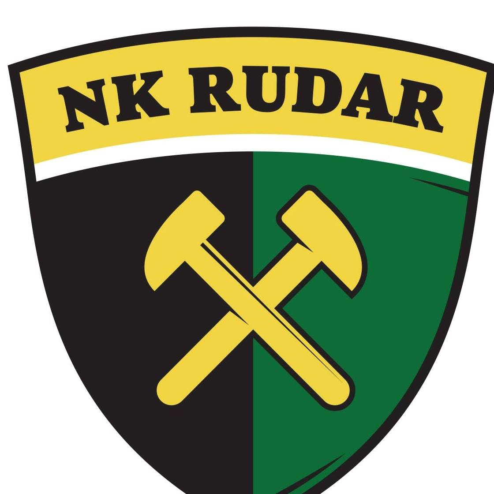

NK Rudar Glogovac
Opis
NK Rudar Glogovac je nogometni klub smješten u Glogovcu.
Klub je ime dobio po rudarima koji su radili u rudniku u Glogovcu.
Adresa terena je Ulica Stjepana Radića 39 Glogovac.
Klub je osnovan 1981. godine.
Boje kluba su:
zelena
crna
Simbol kluba su dva čekića žute boje.
Pratite klub na Facebook-u
Facebook stranica kluba

Iznad svih, Rudar!